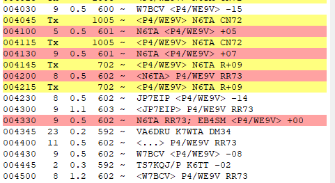

[Date Prev][Date Next][Thread Prev][Thread Next][Date Index][Thread Index]
Re: [NCDXC Chat] Haunted WSJT-X software?
Hi Al,
What frequency were you using?
Bill
WB6JJJ
> On Dec 1, 2023, at 5:16 PM, Al N6TA via Chat <chat@ncdxc.org> wrote:
>
>
> I thought Halloween was over but my SW does not seem to know! My WSJT-X seems to be haunted or something because it does what it wants, not what I think it is supposed to d.
> I call a station as a Hound above 1000 Hz. He is at 600 Hz. He calls me back with a report. So far, so good. But, my software calls him again instead of automatically replying with the return report he needs. Huh?
> So, he calls me again and I then double click on the row of the 2nd report I get. I then am giving a report and I am moved down in frequency to 700 Hz. He was at 600 Hz and was single stream as near as I could tell. I monitor 700 Hz and there is nothing going on there but other QSOs. OK.
> He then sends me a RR73 as I would expect but I then give him his report again and do not get a log window to confirm the logging. Huh?
> I Halt the TX and click on Log to get the window and log it. 90 seconds later, I get another RR73 and the Log window pops up as I would expect..
>
> This is not the first time this has happened and maybe it is with this QSO partner. i just cannot understand why the SW does not respond correctly to my getting a report. Anyone seen this behavior or is it the operator on my end? Screen shows most of what I wrote.
> 3's,
> Al N6TA

>
> _______________________________________________
> Chat mailing list
> Chat@ncdxc.org
> http://mail.ncdxc.org/mailman/listinfo/chat_ncdxc.org
{kind=link}